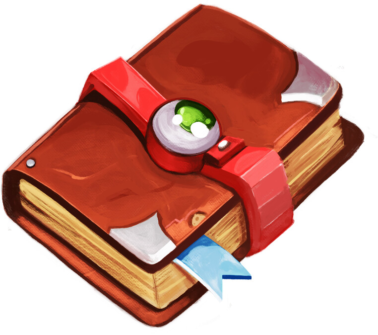

My Questbook
A collection of journeys, goals, and adventures I'd like to pursue.
What is a Quest?
A quest is a journey or mission undertaken by an individual to achieve a specific goal or obtain a significant object or knowledge. Quests often involve challenges, obstacles, and adventures that test the abilities and resolve of the participants.
In literature and storytelling, quests are commonly found in various genres, especially in fantasy, where characters embark on epic journeys to find treasure, rescue someone, or fulfill a prophecy. Quests can also have deeper themes, exploring personal growth, self-discovery, or moral dilemmas.
A quest is a journey or adventure that involves overcoming obstacles or challenges to achieve a specific goal. Quests can be physical, mental, or emotional in nature, and can take place in the real world or in a fictional setting. Quests are often used in video games, literature, and mythology to drive the plot and provide a sense of purpose and direction to the characters.
Quests can be simple or complex, and can involve a wide range of activities, from exploring new places to solving puzzles to battling enemies. The key elements of a quest are a journey, a conflict, and an object to attain.
What is a Questbook?
A quest book is a book containing a list of quests. It is an upgraded version of a bucket list, wherein every desire is written in a specific format that's tailored for questing. Additionally, each quest is illustrated with a little goal image that symbolizes the activity involved in the quest.
Features of a Questbook:
- Desire: The desire is the main goal of the quest. It is what you want to achieve.
- Goal: The goal is the specific details of the quest, such as where and when you want to achieve it.
- Description: A brief description of the quest, including why you want to pursue it.
- Recommended: Tips or recommendations on how to achieve the quest.
- Link: A link to more information about the quest.
Every element is well-researched and clarified. Furthermore, each item is illustrated with a goal picture, and hyperlinked to the appropriate websites.
Elements of a Good Quest
Quests are a great way to set goals and motivate yourself to achieve them. A good quest should have the following elements:
- a journey (involves travel)
- a conflict (involves overcoming obstacles or confrontation) (could be physical or psychological conflict)
- an object to attain (a reward or treasure to take back with you)
My Currently Active Quests
Here are some of the quests I am currently pursuing.
I intend to conquer these quests little by little, day by day -- not via herculean displays of willpower but rather via relentlessly consistent small efforts to improve:
Quest #1: Visit All the USA National Parks
I want to visit all the USA national parks.
Do this in various locations across the USA by 2025.
The USA boasts a diverse range of national parks that showcase its natural beauty, from the rugged mountains to serene forests.
In order to achieve this quest, visit each park's official site for information on access, trails, and activities.
Read blog postQuest #2: Complete the Triple Crowner
I want to complete all 3 USA trails involved in the Triple Crowner.
Do this in various mountainous locations by 2026.
The Triple Crown consists of the Pacific Crest Trail, the Appalachian Trail, and the Continental Divide Trail. Each offers stunning scenery and unique challenges.
In order to complete this journey, plan your hikes carefully by consulting trail guides and connecting with hiking communities.
Read the StoryMajor Life Story Quests
- Quest #1: Build a Champion Body
- Quest #2: Build a Champion Mind
- Quest #3: Build a "Digital Nomad Friendly" Business
- Quest #4: Build a Family
- Quest #5: Build a Cadre
- Quest #6: Attain Financial Independence
- Quest #7: Create a Storyverse Based Around Mark Ranger and Misty Rockwell
Full Side Quest List
- Visit all USA national parks
- Complete all 3 USA trails triple crowner
- Drive perimeter of USA with motorcycle
- Earning all the TSL badges
- ...Many more to come later!